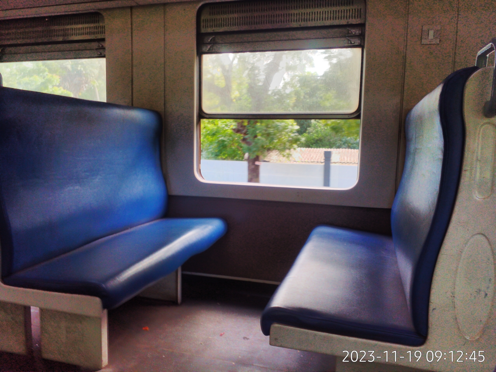
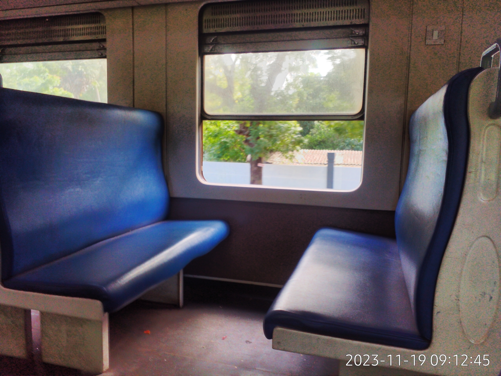

ICF passenger coaches were built by the Intergral Coach Factory in India and imported to Sri Lanka in 2020-2021, having a very similar interior to the Class S13 DEMUs. Origianlly planned to run alongside class M11 locomotives, these can also be hauled by other locomotives such as Class M4.
Facilities
1st Class Air Conditioned
1st class of this train offers comfortable reclining seats in a 2+2 layout with retractable foot rests. There are armrests that can be moved away for accessibility. Every seat gets a retractable table or a cup holder, and a sac to put small stuff into. Obviously there are no fans as this is an air conditioned class. There are LCD screens that shows information about the train speed, current location and much more. If you want to listen to the broadcast, intercom or music, you can plug your wired headphones into the port on the seat, which conviniently offers a 10W USB A port to charge your electronics. You can also use the UK power outlet near the footrests to plug your own power brick. Windows are not openable and the door is touch activated, though you can open it even when the train is moving. There are blinds in the windows in case the sunlight is coming inside. This class lacks any racks to put your bags into. Pitures are from Class S13 carrieges as the interior is very similar.


2nd Class
Seating layout is similar to that of the first class, just with slightly less comfortable seating. You get a retractable table or a cup holder but no sac like first class, you can use the storage racks above to keep your bags. The LCD screens are also here but less of them are available per car. More than enough grabhandles are present indicating use in commuter service. There is a lavatory in the middle of the carriage as this is used in long journies. There are fans for ventilation but they are not really necessary as the windows open. Doors are manual as usual.
3rd Class
Similar to 2nd class except a huge downgrade in seating. You get stiff seats in a 3+2 layout where you share a backrest with the seat behind you. Seats cannot be reclined due to the nature of this design, so you will be sitting at a 90deg angle. Since there are face to face seats, a group of maximum 6 people can sit in a "circle" so this is the train if you're into that. Currently Using images from Class S13, will be updated as soon as the photosphere's processed.
 

Buffet
It's more of a junk food cart that a buffet, so don't get excited yet. You can get popcorn, chips and some water and nothing else.

PIS and Entertaintment systems
PIS is an information system that shows the current location, next location, current route and other useful informations in the video form on small LCD displays as well as Audio from small speakers at every carriege. 1st class gets an exclusive entertaintment system with football games / movies on small displays in the middle of the carriege and the ends of it.

Liveries
Comes in a vibrant red livery with a horizontal yellow band at the bottom and two orange ribbons around windows.